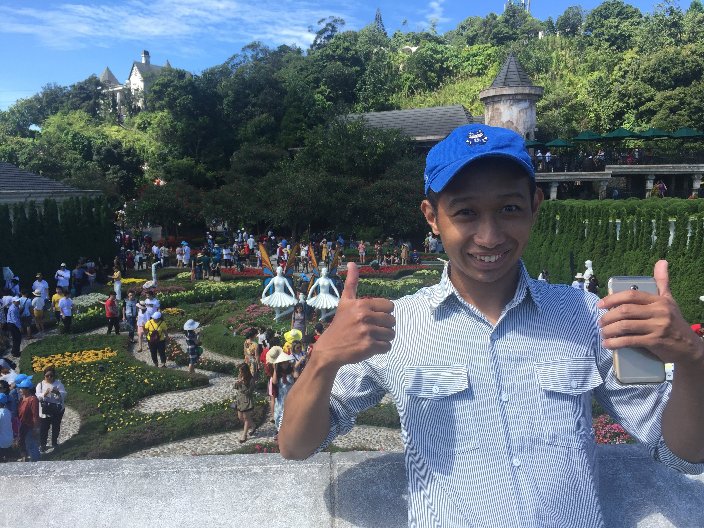

My Friend, Dũng.

June 20, 2019
I was on a plane from Sài Gòn to Huế, and our program coordinator had just sent us a message:
"Here are your roommates for the summer:
Jack, Quinton, and Dũng"
Jack and I were the two American roommates from our DukeEngage Vietnam program, and Dũng was going to be our Vietnamese roommate who we would teach and work with. This moment was the first step in a life-long friendship.
Although I knew how to pronounce Dũng's name, I had no idea what an outstanding friend he would be. When we landed in Huế, Dũng was greeting us there with a big smile. Before we were close enough to say "Hi," he was already jumping around among the other Vietnamese roommates. You could just see the excitement in his eyes!
When we were first face-to-face with Dũng, Jack and I were struck by his hospitality. As we were walking to the bus that would take us to Quảng Trị, Central Vietnam, Dũng immediately went to help us with our bags. On the bus, before we even got the chance to really tell him about ourselves, Dũng pulled our two bucket hats as gifts for us. Jack's hat had BTS on it because Jack had mentioned that he liked K-Pop in an intro letter. My hat had watermelons on it. Dũng had sewn in each of our names onto our hats, and even better, he had a banana hat of his own so that we had our little bucket hat gang :)
In Vietnam, Dũng, Jack, and I had the responsibility of building the first outdoor recreational facility in the province as well as that of teaching supplementary English lessons to local Vietnamese eighth-graders. Dũng was exceptional at both of these responsibilities, and you could tell he put his all in whatever he did.
At the worksite, he was a tank with the pickaxe. He'd hack at the rocky ground longer than any of us could and with strong strikes each time. He'd work so hard he would often be out cold an hour after we left the worksite!
As a teacher, Dũng was amazing at relating the concepts that Jack and I wanted to convey back to what the students had already known from their own experiences. I could see that my students really enjoyed talking and messing around with Dũng; he was willing to be a friend without sacrificing his professionalism, and he was such a great role model for our entire DukeEngage cohort.
Looking beyond all of his merits, Dũng is a person who knows how to live life and love deeply. My time with him was short, but I can't believe how close we became in our two months together. I respect Dũng as a fellow teacher and as a fellow brother. He is truly a one-of-a-kind friend.
Click here to check out my other adventures with Dũng!